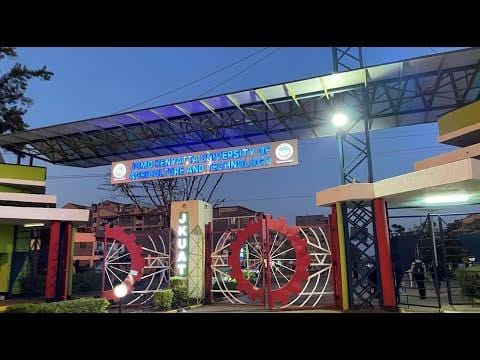

My Education Background

University Education
I am currently pursuing a Bachelor of Science in Applied Biology at Jomo Kenyatta University of Agriculture and Technology (JKUAT). My studies have helped me develop knowledge in biological sciences, laboratory procedures and scientific research.
Secondary Education
I completed my secondary education at St. Theresa's Secondary School in 2024, where I attained a grade of B-.
Skills I Am Developing
- Laboratory procedures
- Microscopy
- Sample collection and handling
- Biological specimen identification
- Scientific report writing
- Teamwork and communication